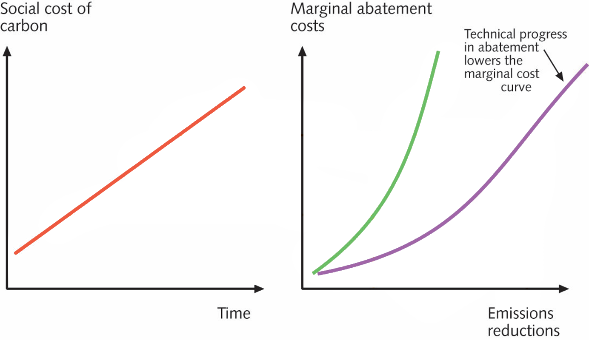
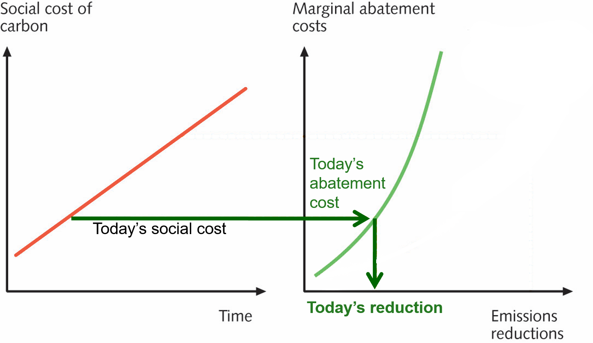
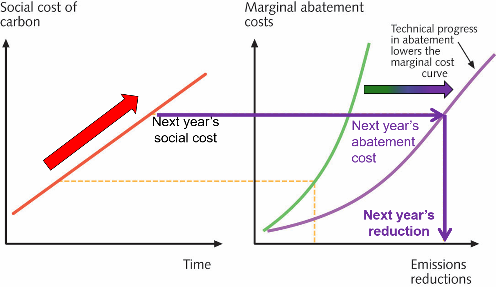

1988: UN Resolution 43/53:
Protection of global climate for present and future generations of mankind
2015: Paris Accord
See, Richard Alley, “The Biggest Control Knob: Carbon Dioxide in Earth’s Climate History” (Dec. 2009)
\[ \begin{aligned} \frac{\$2~\text{trillion}/\text{year} \times 100~\text{years}}{5500~\text{GT}~\ce{CO2}} &= \frac{\$200~\text{trillion}}{5.5~\text{trillion tonnes}~\ce{CO2} } \\ &= $36~\text{per tonne}~\ce{CO2} \\ &= $135~\text{per tonne}~\ce{C} \\ \end{aligned} \]



Economics and the
Social Cost of Carbon